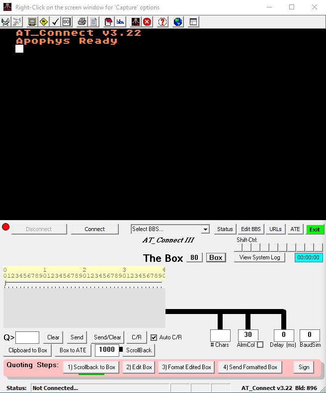

Features

- Connect to Atari internet BBSes in ATASCII mode.
- Use the BBS Editor to maintain your BBS list with all setup options in an INI compatible text file.
- Capture your BBS sessions to text files that can be played back in AT_Connect.
- Dump the screen contents to a bitmap file or printer (40 column mode only).
- 10 unique Macros for each BBS. The content of these macros can optionally be hidden from sight and encrypted in the BBS file.
- Connect on any port.
- Each BBS can have multiple port designations.
- ATASCII graphics in 40 or 80 columns.
- Allows you to save a website for each BBS in the list and shell to your browser to connect to that website.
- Can filter out unwanted characters (ATASCII code 0) generated by the LANtronix devices that many current BBS sysops use to connect their Atari machines to the internet these days.
- Simulate the baud rates of yesterday using the BaudSim mode.
- A 'stay alive' mode keeps you connected to the BBS while operating in BaudSim mode.
- Use a PC-based Text Window Editor (The Box) with full PC editing options for entering messages or pasting text into a BBS.
- Detect URLs in the data stream and make them available to your favorite browser via 1-click.
- Use the ATEditor to capture, edit and send macro-like strings of ATASCII characters...graphics, inverse, control and text.
- Contains an optional 2 kilobyte Scrollback Buffer.
- Contains a Message Quoting function for entering quoted messages on a BBS.
- Contains a Checkbox system for creating graphic checkboxes for use in your messages.
- Can create an optional 'System Log'.
- Keeps track of your time logged into the current BBS and totalizes these values for each BBS.
- Tested in Windows 7, 10 and 11.
- This HTML Help Subsystem explaining the workings of AT_Connect.
DISCLAIMER:
This documentation assumes a working knowledge of terminal programs and BBS usage. It is not intended to teach any of that.
AT_Connect III has been tested under Windows versions 7, 10 and 11 as well as virtual machines running these operating systems. It is not guaranteed to work under earlier or later versions of the Windows operating system.
In fact it is not guaranteed to do anything at all.